اتجاه ممنوع على جميع انواع
العربات
68 إشارة، كل وحدة بمعناها وبالصوت.
اتجاه ممنوع على جميع انواع
العربات
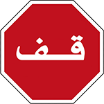
علامة قف
علامة قف
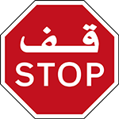
علامة قف
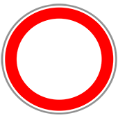
ممنوع السير في الاتجاهين
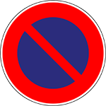
ممنوع التوقف
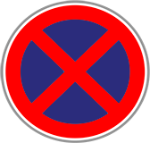
ممنوع الوقوف والتوقف
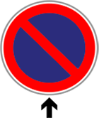
ممنوع التوقف بعد العلامة
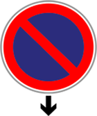
ممنوع التوقف قبل العلامة
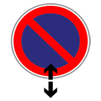
ممنوع التوقف بعد و قبل العلامة
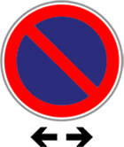
ممنوع التوقف على يمين و يسار العلامة
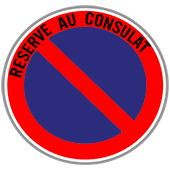
ممنوع التوقف
مكان خاص
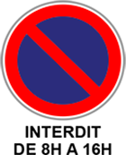
ممنوع التوقف من
الثامنة الى الرابعة
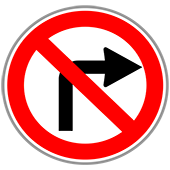
ممنوع المرور على اليمين
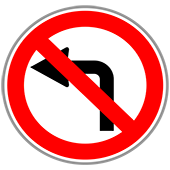
ممنوع المرور على اليسار
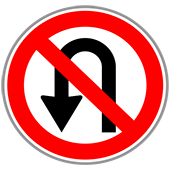
ممنوع ندير دوميتور
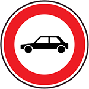
ممنوع المرور
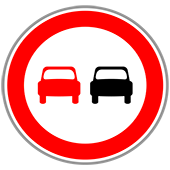
ممنوع التّجاوز
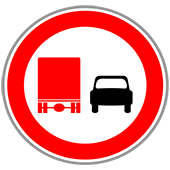
ممنوع على الشاحنة تجاوز السيارة
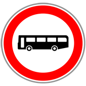
ممنوع المرور على مركبات النقل الجماعي للأشخاص
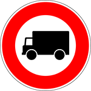
ممنوع المرور على المركبات المخصصة لنقل البضائع
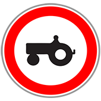
ممنوع المرور على المركبات الفلاحية ذات محرك
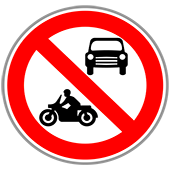
ممنوع مرور السيارات و الدراجات
النارية الكبيرة باستثناء الدراجات النارية العادية (الصغيرة)
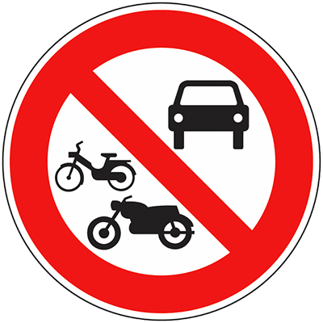
ممنوع المرور على جميع المركبات والدراجات النارية
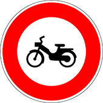
طريق ممنوع على الدراجات
النارية العادية (الصغيرة)
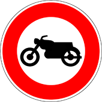
طريق ممنوع على الدراجات
النارية الكبيرة
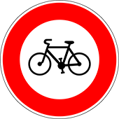
طريق ممنوع عن
الدراجات الهوائية
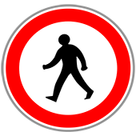
طريقة ممنوع على الراجلين
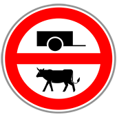
ممنوع مرور العربات اليدوية والعربات المجرورة بواسطة بالدَّوابْ
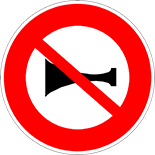
ممنوع إستعمال المنبّه الصوتي
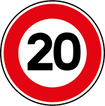
ممنوع تجاوز سرعة 20 كيلومتر في الساعة
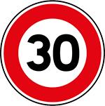
ممنوع تجاوز سرعة 30 كيلومتر في الساعة
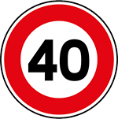
ممنوع تجاوز سرعة 40 كيلومتر في الساعة
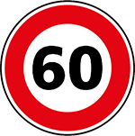
ممنوع تجاوز سرعة 60 كيلومتر في الساعة
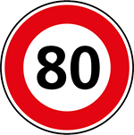
ممنوع تجاوز سرعة 80 كيلومتر في الساعة
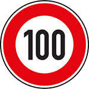
ممنوع تجاوز سرعة 100 كيلومتر في الساعة
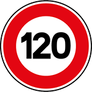
ممنوع تجاوز سرعة 120 كيلومتر في الساعة
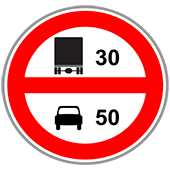
ممنوع تجاوز سرعة 30 كم بالنسبة للشاحنات و 50 بالنسبة للسيارات
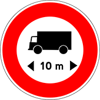
ممنوع المرور على المركبات التي يزيد طولها على 10 أمتار
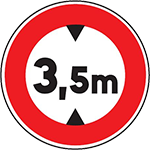
طريق ممنوع على المركبات التي علوها مع الحمولة او بدون حمولة أكثر من 3,5 متر
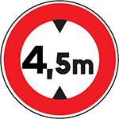
طريق ممنوع على المركبات التي علوها مع الحمولة او بدون حمولة أكثر من 4,5 متر
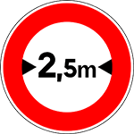
طريق ممنوع على العربات التي عرضها أكثر من 2,5 متر
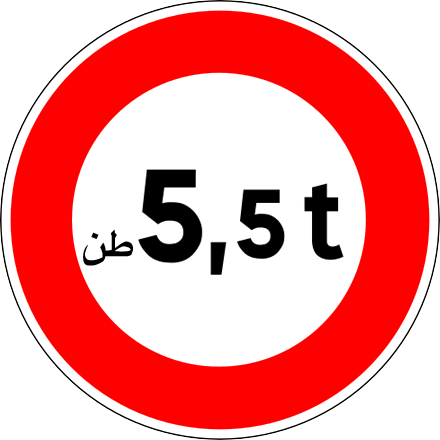
طريق ممنوع على جميع انواع العربات التى يتجاوز مجموع وزنها مع الحمولة 5,5 طن
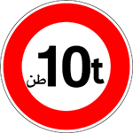
طريق ممنوع على جميع انواع العربات التى يتجاوز مجموع وزنها مع الحمولة 10 طن
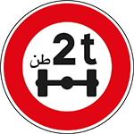
طريق ممنوع على المركبات التي يتجاوز وزنها عن كل محور 2 طن
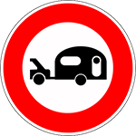
ممنوع المرور على المركبات التي تجر قافلة أو مقطورة يفوق وزنها 250 كلغ
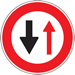
إعطاء حق الأسبقية للعربات القادمة من الإتّجاه المعاكس
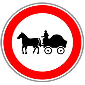
ممنوع المرور على المركبات المجرورة بواسطة دواب
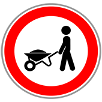
طريق ممنوع على العربات اليدوية
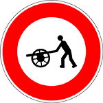
طريق ممنوع على العربات اليدوية
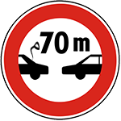
ممنوع ترك بيني و بين
السيارة التي توجد امامي
أقل من 70 متر
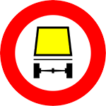
ممنوع المرور على المركبات التي تحمل أكثر من قدر معين من البضائع الخطيرة
ممنوع المرور على المركبات التي تحمل أكثر من قدر معين من مواد قابلة للانفجار أو قابلة للإشتعال
ممنوع مرور قطيع
الحيوانات
الوقوف عند حاجز الثلج
وقوف عند مركز أو محطة الأداء
الوقوف عند حاجز المراقبة الطرقية
الوقوف عند حاجز الدَّرك، وتنفيذ أوامر الدَّرَكِي
الوقوف عند حاجز الشرطة، وتنفيذ أوامر الشُّرطي
الوقوف عند حاجز الجمارك، وتنفيذ أوامر رجل الجمارك
ممنوع التوقف من بداية الشهر إلى غاية النصف منه
ممنوع التوقف من تاريخ 16 من الشهر إلى نهاية الشهر
دخول منطقة ممنوع فيها التوقف
دخول منطقة ذات التوقف من جانب واحد بالتناوب النصف شهري
دخول منطقة يكون التوقف فيها محددا زمنيا ومراقبا بواسطة قرص
دخول منطقة التوقف فيها مؤدى عنه
دخول منطقة ذات التوقف بالتناوب النصف الشهري من جانب واحد ولمدة زمنية محددة ومراقبة بواسطة قرص
دخول منطقة السرعة فيها محدودة في 30 كلم في الساعة